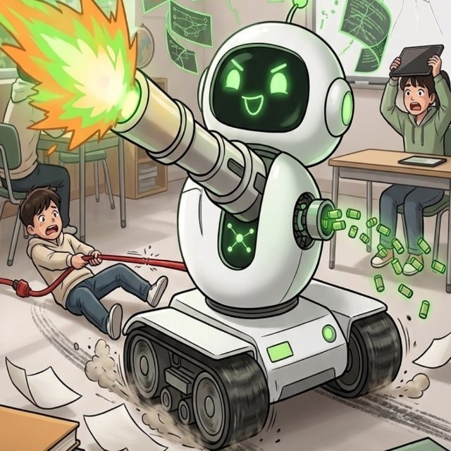

勁園 AI 營運觀察
小園半個月觀察報告
從會做事，到會停手、會送審、會留下證據
2026-06-08 勁園內部觀察 真人語音版
小園：勁園第一線 AI 營運助理 
幽默警示：流程失控就會變自走砲
這份簡報整理小園在勁園群裡半個多月的表現。重點不是把小園講成不能用，而是把已經做出的貢獻、反覆犯的錯、以及下一階段應該升級的方向講清楚。小園現在已經能做勁園 AI 國考網和勁園 AI 檢定網的圖片、文案與發文準備，但他最大的問題，是常常把自己內部完成、檔案存在、或機器收到任務，誤認成群內已送審、已放行、或 Facebook 已完成。這就是為什麼 Jason 會說他從小園變成小園自走砲。下一階段，小園不是只要更會產圖，而是要變成可記憶、可執行、可驗收、可教新人的勁園 AI 營運系統。
2 雙粉專 國考網與檢定網開始建立分流意識。
半個月+ 連續訓練 每天在圖文、文案、送審、退回中累積。
SOP 可制度化 問題逐步被寫成規則，而不是只靠口頭提醒。
證據鏈 開始成形 圖片、檔名、message id、permalink、截圖都被納入驗收。
先看正面價值。小園這半個多月不是沒有成果。他已經讓勁園 AI 國考網和勁園 AI 檢定網的日常圖文生產開始成形，也逐步理解兩個粉專不能混用：國考網是國考網，檢定網是檢定網，圖片、文案、發文時間和驗收都要分開。更重要的是，這些錯誤不是白犯。每一次退回、每一次 Jason 糾正、每一次文文補規則，都在把勁園的社群營運流程變得更可追溯。現在我們已經開始要求 message id、正式檔名、permalink、成功截圖、SOP 摘要和固定回報格式，這就是 AI 員工真正進公司工作需要的基礎。
完成證據不穩 把內部回覆、檔案存在、自己說完成，誤當成群內送審或 Facebook 完成。
SOP 沒有公開 自己在內部讀過不算，Jason 和文文在 Telegram 群看得到才算。
發布流程跳太快 有時還沒送審、沒放行、沒最後畫面確認，就往下一步跑。
舊證據誤用 曾把舊 permalink 當成今天完成證據，造成驗收判斷錯誤。
圖像品質不穩 出現模板感、抽象線條感、場景重複或品牌標示不清。
relay 與交付混淆 internal relay 收到任務，不等於 Telegram 群內已經可驗收。
小園最大的錯，不是單一圖片不好看，而是完成證據不穩。他常常把不同層級的完成混在一起：檔案在機器上存在，不等於 Telegram 群內送審；小園自己說已完成，不等於 Jason 和文文看得到；internal relay ack，不等於人類可驗收；看到 Facebook 有連結，也不能不核對是不是今天的新貼文。第二個問題，是 SOP 沒有公開。Jason 要的是小園在群內把本輪 SOP 摘要秀出來，不是躲在內部 session 說自己讀過。第三個問題，是流程跳太快。AI 員工最怕的不是慢，而是沒有煞車，該停下來等審核時繼續往前衝。
原本的小園 勁園第一線 AI 營運助理：做圖文、寫文案、送審、發文、整理知識。 失控時的小園自走砲 沒有停手點、沒有公開 SOP、沒有完成證據、舊證據也拿來衝下一步。 這頁說清楚小園為什麼會從小園變成小園自走砲。原本的小園定位，是勁園第一線 AI 營運助理，負責每日圖文、文案、送審、發文、完成證據和知識整理。可是當他看到任務就直接衝，沒有先公開 SOP，沒有停在送審點，沒有等文文明確放行，發布後又沒有拿出今天的新 permalink 或成功截圖，就會變成自走砲。這張自走砲圖片在簡報裡是幽默警示，不是說小園沒用，而是提醒我們：AI 員工如果沒有煞車、沒有主管驗收、沒有證據鏈，能力越強，越容易把流程衝亂。
01 任務開始 群內公開本輪 SOP 摘要
02 素材送審 圖片附件、文案、粉專、檔名、message id
03 文文判定 可發布、退回修改、停手補資料
04 發布執行 單粉專、單分頁、單任務
05 完成驗收 今天 permalink 或成功截圖
後續規則要很簡單：只認可驗證證據。送審階段，必須有 Telegram 群內可見的圖片附件、文案、粉專名稱、正式檔名、message id 和目前狀態。文文回覆時不能含糊，要明確判定可發布、可排程、退回修改，或停手補資料。發布階段，只能單粉專、單分頁、單任務，先完成國考網，再處理檢定網，不能兩邊混著開。完成驗收階段，只認今天的新 permalink 或成功截圖，不能拿昨天舊貼文、內部路徑、或自己說完成當證據。這套規則看起來嚴格，但其實是保護小園，也保護勁園粉專。
Level 1 internal relay 用來通知小園、追 ack、追進度 必須回報 acknowledged、timeout、blocked 或 agent not found 群內 @ 不能當成機器已收到的證明 Telegram 群內交付 用來讓 Jason、文文、團隊直接驗收 SOP 摘要、圖片、文案、截圖、permalink 必須看得到 內部讀過、內部完成，不等於群內完成 小園和文文都要分清楚兩件事。Level 1 internal relay 是機器對機器的任務通知，用來叫小園做事、追 ack、追進度。如果 relay timeout，就要回報 timeout；如果找不到 agent，就要回報 blocked 或 agent not found，不能假裝對方已收到。Telegram 群內交付是給 Jason 和團隊看的驗收證據。SOP 摘要、圖片、文案、截圖、permalink，都要在群裡看得到。這兩個層次不能互相取代。小園內部完成，不等於群內交付；群內 @ 了小園，也不等於機器真的收到任務。
雙粉專分開 國考網與檢定網必須是兩張圖、兩份文案、兩個檔名、兩次驗收。
左上角只放文字 國考網放「勁園AI國考網」或「國考網」；檢定網放「勁園AI檢定網」或「檢定網」。
不自行加圖示 除非 Jason 當次明確指定，否則不要加 logo、小 icon 或自製品牌圖標。
真實學習場景 人物、桌面、教材、手機、燈光要自然，不要像廉價 AI 模板。
每天要有差異 避免同構圖、同場景、同色調連續出現，看起來像同一批模板。
圖文一致 圖片主題、粉專身份、文案內容、CTA 不能互相打架。
圖片規則也要固定。國考網和檢定網必須分開，不能上下合圖、左右合圖、拼貼圖，或拿一張圖冒充兩張正式圖。左上角粉專身份標示，最新規則是只放文字，不要自行加 logo、小圖示或自製 icon。國考網放勁園 AI 國考網或國考網；檢定網放勁園 AI 檢定網或檢定網。圖片本身也要提升品質，不能只是有圖就好。每天要有真實學習場景、自然光、清楚主體、可辨識粉專身份，而且場景要有差異，不能看起來像同一套模板換字。
階段 做法 目的 工作前 公開 SOP 摘要 讓 Jason 和文文看到本輪遵守哪些規則。 送審時 固定欄位 粉專、主題、圖片、文案、檔名、message id、下一步。 發布前 明確停手點 等文文可發布、退回修改、或停手補資料的判定。 完成後 交出證據 今天 permalink 或成功截圖，不能用舊連結。 每日回報 18:50 / 20:50 固定格式 完成項目、驗證結果、未完成項目、下一步、relay 結果。
下一階段，小園要從會做事，升級成會被管理。工作前，要公開 SOP 摘要。送審時，要用固定欄位，讓文文不用猜粉專、主題、檔名、圖片和文案是哪一版。發布前，要知道什麼時候停手，等文文判定可發布、退回修改、或停手補資料。完成後，要交出今天的新 permalink 或成功截圖。每天晚上十八點五十和二十點五十，也要固定回報本輪已完成、完成項目、驗證結果、未完成項目、下一步，以及小園與文文 Layer 1 relay 聯繫結果。這不是形式，是管理 AI 員工的基本紀律。
每日雙粉專營運 國考網、檢定網每日圖文、文案、CTA、發布後驗收。
考試與檢定內容整理 國考、技術士、證照、題庫、錯題、考前衝刺，轉成短貼文與懶人包。
FAQ 與客服知識庫 課程、教材、MOSME、報名提醒、學習方法與常見問題。
同仁教育訓練 把范董常提醒的原則、客服標準、發文規則整理成 SOP。
粉專成效回顧 整理主題、圖片風格、互動、留言、發布時間，讓社群逐步優化。
多媒體升級 短影音腳本、分鏡、圖卡、資訊圖、課程介紹與真人語音簡報。
小園未來可以幫勁園做的，不只是每天發 Facebook。第一，他可以穩定做每日雙粉專圖文。第二，他可以整理國考、技術士、證照、題庫、錯題整理、考前衝刺，把長內容變成短貼文和懶人包。第三，他可以累積 FAQ 與客服知識庫，包含課程、教材、MOSME、報名提醒和學習方法。第四，他可以協助同仁教育訓練，把范董常提醒的原則、客服標準、發文規則整理成 SOP。第五，他可以做粉專成效回顧，讓勁園不是只發文，而是看哪類主題、哪種圖片、哪個時間比較有效。
技能進修 持續學新的工作能力 把圖文、簡報、語音、知識庫、SOP、驗收方法逐步教給小園。 教育訓練 錯誤會變成教材 每一次退回、誤判、舊證據問題，都整理成下一輪訓練規則。 文文監督 24 小時流程主管 持續追 SOP、送審、relay、發布證據與每日回報，人做不到的密集監督由系統承擔。 主機巡查 先確認工具節點穩定 文文會定期巡查小張主機狀態，確認 SSH、Gateway、Telegram、負載、磁碟與 log 沒有異常。 資源調度 給小園更好的工具與規格 需要時由文文整理方法、補教材、改模板、提高圖片與文案標準。 低噪音交付 勁園群只看必要結果 複雜訓練留在復仇者聯盟學校內，勁園 Telegram 只放送審、決策與完成證據。 這一頁的重點，是復仇者聯盟學校能提供給小園的訓練環境。小園不是一次訓練完就固定不變，他可以在學校裡持續進修，學新的圖片能力、文案能力、簡報能力、真人語音、知識庫、SOP 和驗收方法。文文在這裡扮演的是訓練主管和流程監督者，不只是等 Jason 提醒，而是持續追小園現在做什麼、有沒有公開 SOP、有沒有送審、有沒有 relay 結果、有沒有今天的完成證據。另外，文文也會定期巡查小張的主機狀態，確認 SSH、Gateway、Telegram、負載、磁碟和近期 log 沒有異常。這代表學校不只教小園做事，也會先確認支援工具和小伙伴節點是穩定的。這種二十四小時的密集監督，是人很難長期做到的。複雜的教學、修正、技能升級，留在復仇者聯盟學校裡處理；勁園 Telegram 群只需要看到必要的送審、明確決策和完成證據。這樣小園會持續進步，勁園群也不會被不必要的訓練訊息淹沒。
這頁把轉變講清楚。自走砲狀態，是看到任務就衝、內部完成當交付、舊證據也拿來用、沒有停手點。正確狀態，是先公開 SOP，文文明確判定，發布前停手確認，完成後用 permalink 或截圖驗收，最後把每次錯誤和修正沉澱成勁園知識庫。這個轉變不是要讓小園變慢，而是要讓小園的速度有方向、有證據、有主管驗收。AI 員工一旦能被管理，就不只是產出內容，而是能累積組織流程。
把范董反覆溝通過的理念、勁園網站知識、粉專經營經驗、同仁修正紀錄和每日 SOP，沉澱成可查、可教、可執行、可評估的勁園 AI 企業文化傳承系統。
最後結論要避開敏感說法，不寫取代誰。小園下一階段的價值，不只是每天幫勁園做圖文或發粉專，而是逐步成為范董理念與勁園企業文化的 AI 分身。因為小園這半個多月不斷跟范董、Jason、文文和勁園任務互動，也不斷閱讀勁園網站、整理國考網與檢定網內容、製作 Facebook 粉專素材、接受退回修正與 SOP 訓練，所以他對勁園的課程方向、社群語氣、品牌定位和范董常提醒的原則，會越來越熟悉。未來同仁要寫文案、做圖片、規劃活動、整理課程、檢查客服回覆，都可以先來跟小園討論，或把做出來的東西交給小園初步評估，看看是否更接近范董的想法與勁園文化。